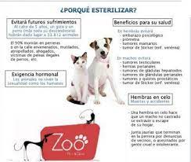

Queremos contarte nuestra mision
Mundo patitas es una entidad sin fines de lucro que trabaja para promover un cambio de conducta en la sociedad frente a los animales de compañía, basado en el respeto y la responsabilidad.
Trabajan sobre dos ideas simultáneas: castraciones gratuitas y a bajo costo por un lado y, por otro, transmitiendo a los más chicos, mensajes de respeto y cuidado a los animales. Esta organización dedica sus ingresos y recursos a la atención directa de las mascotas que ya han sido abandonadas, dándoles un lugar en el centro de adopción hasta que encuentren un hogar definitivo. Nuestra organizacion cuenta con un formulario de adopcion y seguimiento de los animales en adopcion asegurandonos asi que su hogar sea seguro y para siemrpe.
| Coordinadoras generales: | Nº de contacto: |
|---|---|
| Monica gutierrez | 3364589678 |
| Paola Martinez | 341596328 |
| Sabrina Osein | 3364593120 |